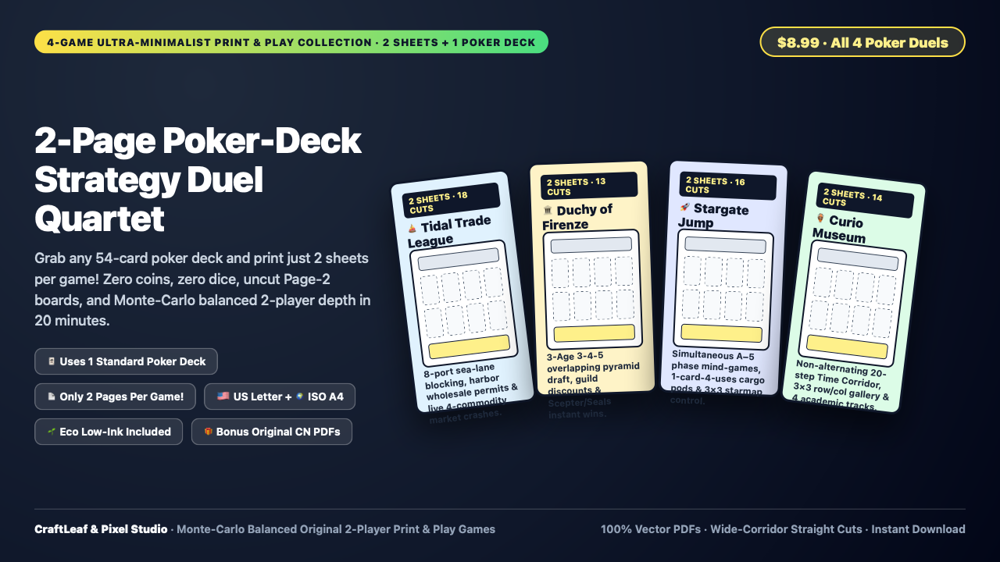

Turn 1 Household Poker Deck + 2 Printed Pages Into Four Deep 2-Player Euro & 4X Board Games
Love modern 20-minute 2-player hobby board games (like 7 Wonders Duel, Race for the Galaxy, Patchwork, or Jaipur), but hate cutting 120 double-sided cards? Every game in our 2-Page Poker-Deck Strategy Duel Quartet uses a single standard 54-card deck in your drawer, keeps Page 2 100% uncut as a full-bleed board, and needs only 13–20 flush straight cuts on Page 1 — zero coins, zero dice!

🃏 Part I: The 4 Brand-New 2-Page Poker-Deck Duels (Free Sample PDFs)
🎲 Part II: The Original Pocket Tabletop 3-Game Trilogy (Updated Latest Masters)
🔗 Related Tabletop Design, 3D Papercraft & Card Layout Guides
🎲 Ready to print & play tonight?
All 3 editions are live now on Gumroad (native US Letter, ISO A4, Eco Low-Ink & Bonus Original CN PDFs): Pocket Trilogy ($7.99), 2-Page Poker Quartet ($8.99), or Complete 7-Game Anthology ($13.99)!